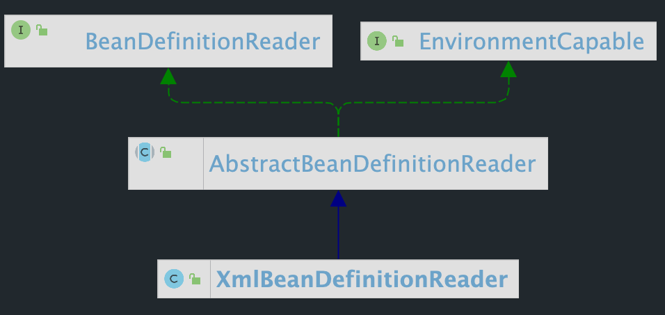

Spring IoC之BeanDefinitionReader
概述
BeanDefinitionReader 的作用是读取 Spring 配置文件中的内容，将其转换为 IoC 容器内部的数据结构：BeanDefinition。 XmlBeanDefinitionReader，该类是 BeanDefinitionReader 的一个重要实现。本文主要对 BeanDefinitionReader 体系中的关键方法进行解读。
BeanDefinitionReader BeanDefinitionRegistry 接口一次只能注册一个 BeanDefinition，而且只能自己构造 BeanDefinition 类来注册。BeanDefinitionReader 解决了这些问题，它一般可以使用一个 BeanDefinitionRegistry 构造，然后通过 loadBeanDefinitions()等方法，把 Resources 转化为多个 BeanDefinition 并注册到 BeanDefinitionRegistry。
BeanDefinitionReader 接口定义如下：
1 2 3 4 5 6 7 8 9 10 11 12 13 14 15 16 17 18 19 20 21 22 23 24 25 26 27 28 29 30 public interface BeanDefinitionReader BeanDefinitionRegistry getRegistry () ; @Nullable ResourceLoader getResourceLoader () ; @Nullable ClassLoader getBeanClassLoader () ; BeanNameGenerator getBeanNameGenerator () ; int loadBeanDefinitions (Resource var1) throws BeanDefinitionStoreException int loadBeanDefinitions (Resource... var1) throws BeanDefinitionStoreException int loadBeanDefinitions (String var1) throws BeanDefinitionStoreException int loadBeanDefinitions (String... var1) throws BeanDefinitionStoreException }
关于 BeanDefinitionReader 的结构图如下：

AbstractBeanDefinitionReader：实现了 EnvironmentCapable，提供了获取/设置环境的方法。定义了一些通用方法，使用策略模式，将一些具体方法放到子类实现。
XmlBeanDefinitionReader：读取 XML 文件定义的 BeanDefinition
PropertiesBeanDefinitionReader：可以从属性文件，Resource，Property 对象等读取 BeanDefinition
GroovyBeanDefinitionReader：可以读取 Groovy 语言定义的 Bean
AbstractBeanDefinitionReader 该类是实现了 BeanDefinitionReader 和 EnvironmentCapable 接口的抽象类，提供常见属性：工作的 bean 工厂、资源加载器、用于加载 bean 类的类加载器、环境等。具体定义如下：
1 2 3 4 5 6 7 private final BeanDefinitionRegistry registry;@Nullable private ResourceLoader resourceLoader;@Nullable private ClassLoader beanClassLoader;private Environment environment;private BeanNameGenerator beanNameGenerator;
关于该类最核心的方法是 loadBeanDefinitions()方法，所以接下来我们主要就是分析该方法。
1 2 3 4 5 6 7 8 9 10 11 12 13 public int loadBeanDefinitions (String... locations) throws BeanDefinitionStoreException Assert.notNull(locations, "Location array must not be null" ); int count = 0 ; String[] var3 = locations; int var4 = locations.length; for (int var5 = 0 ; var5 < var4; ++var5) { String location = var3[var5]; count += this .loadBeanDefinitions(location); } return count; }
当传入的参数为资源位置数组时，进入上述方法，如果为字符串数组，则挨个遍历调用 loadBeanDefinitions(location)方法。其定义如下：
1 2 3 4 5 6 7 8 9 10 11 12 13 14 15 16 17 18 19 20 21 22 23 24 25 26 27 28 29 30 31 32 33 34 35 36 37 38 39 40 41 42 43 44 45 public int loadBeanDefinitions (String location) throws BeanDefinitionStoreException return this .loadBeanDefinitions(location, (Set)null ); } public int loadBeanDefinitions (String location, @Nullable Set<Resource> actualResources) throws BeanDefinitionStoreException ResourceLoader resourceLoader = this .getResourceLoader(); if (resourceLoader == null ) { throw new BeanDefinitionStoreException("Cannot load bean definitions from location [" + location + "]: no ResourceLoader available" ); } else { int count; if (resourceLoader instanceof ResourcePatternResolver) { try { Resource[] resources = ((ResourcePatternResolver)resourceLoader).getResources(location); count = this .loadBeanDefinitions(resources); if (actualResources != null ) { Collections.addAll(actualResources, resources); } if (this .logger.isTraceEnabled()) { this .logger.trace("Loaded " + count + " bean definitions from location pattern [" + location + "]" ); } return count; } catch (IOException var6) { throw new BeanDefinitionStoreException("Could not resolve bean definition resource pattern [" + location + "]" , var6); } } else { Resource resource = resourceLoader.getResource(location); count = this .loadBeanDefinitions((Resource)resource); if (actualResources != null ) { actualResources.add(resource); } if (this .logger.isTraceEnabled()) { this .logger.trace("Loaded " + count + " bean definitions from location [" + location + "]" ); } return count; } } }
根据资源加载器的不同，来处理资源路径，从而返回多个或一个资源，然后再将资源作为参数传递给 loadBeanDefinitions(resources)方法。在该类中存在一个 loadBeanDefinitions(Resource... resources)方法，该方法用于处理多个资源，归根结底，最后还是调用 loadBeanDefinitions((Resource)resource)方法，该方法的具体实现在 XmlBeanDefinitionReader 中。
XmlBeanDefinitionReader 该类作为 AbstractBeanDefinitionReader 的扩展类，继承了 AbstractBeanDefinitionReader 所有的方法，同时也扩展了很多新的方法，主要用于读取 XML 文件中定义的 bean。具体使用如下：
1 2 3 4 5 6 7 @Test public void getBeanDefinition () ClassPathResource resource = new ClassPathResource("application_context.xml" ); DefaultListableBeanFactory factory = new DefaultListableBeanFactory(); XmlBeanDefinitionReader reader = new XmlBeanDefinitionReader(factory); reader.loadBeanDefinitions(resource); }
这段代码是 Spring 中编程式使用 IOC 容器，通过这四段简单的代码，我们可以初步判断 IOC 容器的使用过程。
获取资源
获取 BeanFactory
根据新建的 BeanFactory 创建一个BeanDefinitionReader对象，该Reader 对象为资源的解析器
装载资源 整个过程就分为三个步骤：资源定位、装载、注册
资源定位 。我们一般用外部资源来定义 Bean 对象，所以在初始化 IoC 容器的第一步就是需要定位这个外部资源。在 Spring IoC资源管理的两篇文章中已经详细说明了资源加载的过程。
装载 。装载就是 BeanDefinition 的载入，BeanDefinitionReader 读取、解析 Resource 资源，也就是将用户定义的 Bean 表示成 IoC 容器 的内部数据结构：BeanDefinition。在 IoC 容器内部维护着一个 BeanDefinition Map 的数据结构，在配置文件中每一个都对应着一个 BeanDefinition 对象。
注册 。向 IoC 容器注册在第二步解析好的 BeanDefinition，这个过程是通过 BeanDefinitionRegistry 接口来实现的。本质上是将解析得到的 BeanDefinition 注入到一个 HashMap 容器中，IoC 容器就是通过这个 HashMap HashMap 来维护这些 BeanDefinition 的。注意：此过程并没有完成依赖注入，依赖注册是发生在应用第一次调用 getBean()向容器索要 Bean 时。当然我们可以通过设置预处理，即对某个 Bean 设置 lazyInit 属性，那么这个 Bean 的
接着上述讲的 loadBeanDefinitions()，我们看一下在 XmlBeanDefinitionReader 类中的具体实现。
1 2 3 4 5 6 7 8 9 10 11 12 13 14 15 16 17 18 19 20 21 22 23 24 25 26 27 28 29 30 31 32 33 34 35 36 37 38 39 40 41 42 43 44 45 46 47 48 49 50 51 52 public int loadBeanDefinitions (Resource resource) throws BeanDefinitionStoreException return this .loadBeanDefinitions(new EncodedResource(resource)); } public int loadBeanDefinitions (EncodedResource encodedResource) throws BeanDefinitionStoreException Assert.notNull(encodedResource, "EncodedResource must not be null" ); if (this .logger.isTraceEnabled()) { this .logger.trace("Loading XML bean definitions from " + encodedResource); } Set<EncodedResource> currentResources = (Set)this .resourcesCurrentlyBeingLoaded.get(); if (currentResources == null ) { currentResources = new HashSet(4 ); this .resourcesCurrentlyBeingLoaded.set(currentResources); } if (!((Set)currentResources).add(encodedResource)) { throw new BeanDefinitionStoreException("Detected cyclic loading of " + encodedResource + " - check your import definitions!" ); } else { int var5; try { InputStream inputStream = encodedResource.getResource().getInputStream(); try { InputSource inputSource = new InputSource(inputStream); if (encodedResource.getEncoding() != null ) { inputSource.setEncoding(encodedResource.getEncoding()); } var5 = this .doLoadBeanDefinitions(inputSource, encodedResource.getResource()); } finally { inputStream.close(); } } catch (IOException var15) { throw new BeanDefinitionStoreException("IOException parsing XML document from " + encodedResource.getResource(), var15); } finally { ((Set)currentResources).remove(encodedResource); if (((Set)currentResources).isEmpty()) { this .resourcesCurrentlyBeingLoaded.remove(); } } return var5; } }
loadBeanDefinitions(resource) 是加载资源的真正实现，从指定的 XML 文件加载 Bean Definition，这里会对 Resource 封装成 EncodedResource，主要是为了对 Resource 进行编码，保证内容读取的正确性。封装成 EncodedResource 后，调用 loadBeanDefinitions(encodedResource)。
首先通过 resourcesCurrentlyBeingLoaded.get() 来获取已经加载过的资源，然后将 encodedResource 加入其中，如果 resourcesCurrentlyBeingLoaded 中已经存在该资源，则抛出 BeanDefinitionStoreException 异常。完成后从 encodedResource 获取封装的 Resource 资源并从 Resource 中获取相应的 InputStream ，最后将 InputStream 封装为 InputSource 调用 doLoadBeanDefinitions()。方法 doLoadBeanDefinitions() 为从 xml 文件中加载 BeanDefinition 的真正逻辑
If you like this blog or find it useful for you, you are welcome to comment on it. You are also welcome to share this blog, so that more people can participate in it. If the images used in the blog infringe your copyright, please contact the author to delete them. Thank you !